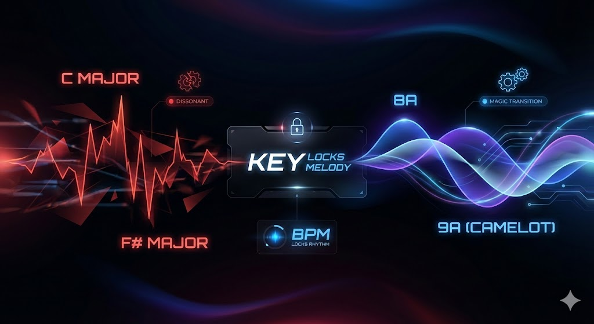
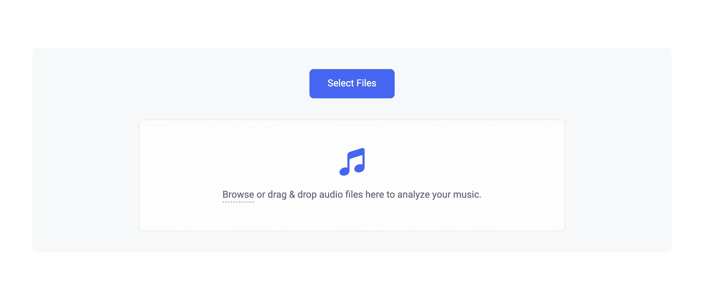

As a DJ, I know that nothing clears a dancefloor faster than a clashing transition; finding the right musical key is the secret weapon for seamless sets. Harmonic Mixing is a technique that separates the begineers from the pros.
In this guide, I'll show you the best ways to find the key of songs, and why this is such an essential skill for DJs.
What You’ll Learn About Finding The Key of Songs
- Why harmonic mixing is essential for maintaining energy on the dancefloor.
- How to find the key of a song using your ear, an instrument, or a guitar.
- Using bpm detection algorithms and software to analyze your local audio file library.
- How PulseDJ acts as a little helper by automatically displaying key and bpm for compatible mixing.
Why DJs Need To Know The Key of Songs

Before we dive into the several methods to find key information, we have to touch on why it matters. When you play two tracks together, their musical keys need to be compatible. If you mix a track in C Major with one in F# Major, it’s going to sound dissonant and messy. However, if you mix compatible keys (like 8A and 9A in Camelot notation), the transition feels like magic.
This is where having a reliable tool becomes necessary. While bpm (tempo) keeps the rhythm locked, the key keeps the melody locked.
Introducing PulseDJ: Your Intelligent Companion
I want to mention PulseDJ early on because it simplifies this entire process for digital DJs. PulseDJ is a smart DJ co-pilot that runs alongside your existing DJ software . It’s a free program currently in Beta that integrates with platforms like Serato, Rekordbox, and Traktor.
One of its best features is how it handles key and bpm. When you play a track, PulseDJ analyzes the situation and provides suggestions. Crucially, it displays the Key (e.g., 8A, 5B) and BPM for every suggested track. It even highlights compatible tracks in green, allowing you to identify harmonically compatible tracks instantly without needing to search or scan manually.
Using PulseDJ is by far the easiest way for DJs to find the key of songs . It also suggests compatible songs to play next.
Best of all, it's completely free to download and use ! Download PulseDJ Free Here !The PulseDJ Advantage: Real-Time Visualization

While the methods above are useful, PulseDJ streamlines the workflow by reading the history files your DJ software creates. It doesn't modify your audio file or saved playlists; it simply reads the data to give you accurate suggestions.
Because PulseDJ supports Camelot notation (like 8A or 5B), it makes it incredibly easy to identify which songs will mix well. You don't need to check a separate song key website or finger through your record crate. The app does the heavy lifting.
If you have a friend playing back-to-back with you, PulseDJ is incredibly helpful because it suggests tracks based on the current vibe, ensuring you stay in key even if you aren't familiar with every single track in the library.
Download PulseDJ For Free!

Method 1: The "Old School" Ear & Instrument
If you have musicians ' skills or a good ear , you can figure out the key without a computer .
- Grab an Instrument: Pick up a guitar or sit at a piano.
- Listen & Play: Hear the track and try to find the "home" note (the tonic) by playing notes on your instrument.
- Find the Scale: Once you find the root note, determine if the chords sound happy (Major) or sad (minor key).
- Verify: Play the scale over the track. If every note fits, you've found it.
This method works for live music or audio performed locally, but it takes time. While it's great for training your listening skills, in a live DJ set, you don't have a few seconds to spare, let alone the time to explore scales on a keyboard.
Method 2: DJ Software Analysis

For most of us, we rely on bpm detection algorithms built into our software. When you add files to your library, the software will analyze them.
- File Formats: Whether you use wav, flac, ogg, aac, or mp3, modern software can read the audio data.
- The Process: You drag the file in, and the developer's algorithm scans the transients and frequencies to determine the tempo and key.
- Accuracy: This is generally accurate, but sometimes software gets it wrong (e.g., identifying a relative minor as a major).
If you have a huge library, scanning can take a while. Also, if you accidentally deleted your metadata, you might have to re-analyze.
Method 3: Online Key & BPM Finders

If you are away from your main rig - perhaps at a friend's house or just checking a new demo on your mobile device - you might use online app services.
There are many key and bpm finder websites where you can upload a file or search a database.
- Browser-Based: You navigate to a page in your browser, upload the track, and the service tells you the key.
- Databases: Some sites, like Beatport or Tunebat, have a song detail page for almost every commercial release. You can view the song detail data including user entered chords or metadata provided by the label.
- Considerations: If you are using a phone, watch your mobile data allowance, as uploading heavy wav files consumes data quickly. Also, consider security - be careful where you upload unreleased music.
Comparison of Song Key Finding Methods
Feature
Ear / Instrument
Online Finders
PulseDJ Integration
Slow (requires play & listen)
Medium (requires upload)
Instant (Real-time)
Free (if you own an instrument)
Varies (some are paid)
Accuracy
High (depends on skills)
Varies by algorithm
High (uses library data)
Offline Use
No (needs access to net)
Yes (after setup)
Key Part
Identifies chords/notes
Identifies Key/BPM
Key, BPM & Compatibility
Final Thoughts
Whether you use a guitar, an online finder, or relying on bpm detection algorithms, knowing the key of your music is non-negotiable for professional sounding sets. While standard DJ software does a great job of analysis, having a dedicated companion like PulseDJ ensures you can utilize that data effectively in real-time.
PulseDJ runs as a separate application, meaning it won't crash your main software, and it provides feedback on what to play next with key and bpm in mind.
Start Mixing in Key with PulseDJ
Ready to stop guessing and start mixing harmonically? Download the latest version of PulseDJ and let the software guide your next perfect transition.
‹ Top 10 DJing Tips and Tricks for Every Level